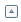

Navigation and the User Interface
| |
Note: This article applies to Fuji and earlier releases. For more current information, see Navigation and the user interface at http://docs.servicenow.com
The ServiceNow wiki is no longer being updated. Visit http://docs.servicenow.com for the latest product documentation. |
1 Overview
The user interface is the main way to interact with the applications and information in a ServiceNow instance. The following versions of the user interface are currently available:
- UI15: replaces UI14 with an updated look, including redesigned icons and usability improvements. The UI15 interface is available starting with the Fuji release.
- UI14: provides an updated look, including redesigned icons, buttons, and color themes. It incorporates the UI11 interface and provides a series of usability improvements. The UI14 interface is available starting with the Eureka release.
- UI11: builds on the classic interface by adding the Edge and several features including split screen, bookmarks, and flyout windows.
- Classic: is the original ServiceNow product interface.
| |
Note: Screen shots in the ServiceNow wiki may reflect any version of the ServiceNow user interface. |
{kind=link}
{kind=link}
{kind=link}
{kind=link}
2 UI15 Overview Video
The following video provides an overview of UI15.
3 User Interface Tour
The user interface is divided into the following areas:
- Banner frame: runs across the top of every page and contains a logo, global navigation controls, and tools.
- Application navigator or left-navigation bar: provides links to all applications and modules.
- Content frame: displays information such as lists, forms, homepages, and wizards.
- The Edge: a toolbar on the left side of the interface that provides quick links to commonly used features. The Edge is available in UI14 and UI11.
3.1 Banner Frame
The banner frame runs across the top of every page. It contains a logo and the following information, controls, and tools. Administrators can customize the banner.
3.1.1 UI15 Banner Frame
The banner frame for UI15 contains the following controls and tools.
- Welcome message: shows the name of the current user and provides a link to the user's profile.
- Impersonation key () (administrators only): allows the administrator to switch user views without logging out; useful for testing security and role-specific setup functions.
- Elevated Privileges () (elevated privilege roles only): allows the user to elevate to a higher security role when needed and then return to their normal role.
- Global Text Search (
 ): searches for text in multiple applications.
): searches for text in multiple applications. - Collapse/Expand Banner ( / ): alters the amount of space the banner frame occupies.
- Logout: returns to the Welcome page for subsequent login.
{kind=link}
{kind=link}
{kind=link}
{kind=link}
{kind=link}
- Gear icon (
 ): displays the system menu with additional settings and controls.
): displays the system menu with additional settings and controls.
- What's new: opens a slideshow of UI15 highlights.
- Help (): opens the ServiceNow Wiki in another window or tab.
- Home (): provides links to available application homepages.
- Preferences:
- Wrap Longer Text in List Columns: long strings wrap in list columns instead of appearing as one long line when this setting is enabled.
- Compact View: the UI is optimized to display more information in the browser window when this setting is enabled.
- Accessibility Enabled: Section 508 accessibility features are activated when this setting is enabled.
- Tabbed forms: form sections and related lists appear in tabs when this setting is enabled. This setting previously appeared as an icon in the form header.
- Alt/⌘+Click Opens List Links in Form Pane: pressing Alt (PC) or Command (Mac) and clicking the record name in a list, opens the record in a new form pane tab when this setting is enabled.
- Date/Time: the format in which dates and times appear depends on this setting. Select Calendar (for example, 2014-11-13, 15:58:58), Time Ago (for example, 11 minutes ago), or Both.
- Compact list date/time: date and time values appear in a compact format when this setting is enabled. The year is not shown for date values within the current year, and seconds are not shown for time values. This setting is not available if the Date/Time selection is Time Ago.
- Split Layout: splits the content frame into two panes, either Vertical or Horizontal. In a vertical split, the list pane is on the left and the form pane is on the right. In a horizontal split, the list pane is on the top and the form pane is on the bottom. Select None to disable the split layout.
- Related List Loading: determines when related lists load on forms. For more information, see Configuring When Related Lists Load.
- Application (administrators only): provides a link to the Applications list (), the application picker, and the currently selected application (
 ).
). - Update Set (administrators only): provides a link to the Update Sets list, the Update Set picker, and the currently selected update set.
- Language: select a language or return to the default language (). This option is available if a language plugin is activated.
- Time zone: select a time zone or return to the default time zone ().
- Theme: select a theme for the user interface or return to the system theme ().
- Printer friendly version (): opens a printer friendly version of the current content frame.
- JavaScript Log and Field Watcher () (administrators only): opens the client-side JavaScript Debug window. This icon is commonly called the debug icon.
{kind=link}
{kind=link}
{kind=link}
{kind=link}
{kind=link}
{kind=link}
3.1.2 UI14 Banner Frame
{kind=link}
The UI14 banner frame contains the following controls and tools.
- Welcome message: shows the name of the current user and provides a link to the user's profile.
- Impersonation key () (administrators only): allows the administrator to switch user views without logging out; useful for testing security and role-specific setup functions.
{kind=link}
- Elevated Privileges () (elevated privilege roles only): allows the user to elevate to a higher security role when needed and then return to their normal role.
{kind=link}
- Global Text Search (
 ): searches for text in multiple applications.
): searches for text in multiple applications.
- Logout: returns to the Welcome page for subsequent login.
{kind=link}
- Gear icon (): displays the system menu with additional settings and controls. Some of the icons and fields that appear under this icon appear directly in the UI11 and classic banner frames.
- Home (
 ): provides links to available application homepages.
): provides links to available application homepages. - Printer friendly version (
 ): opens a printer friendly version of the current content frame.
): opens a printer friendly version of the current content frame. - Help (
 ): opens the ServiceNow Wiki in another window or tab.
): opens the ServiceNow Wiki in another window or tab. - JavaScript Log and Field Watcher () (administrators only): opens the client-side JavaScript Debug window. This icon is commonly called the debug icon.
- Font Size ( / ): changes the font size on all pages and menus. When you make a change, the new font size appears briefly in the Welcome banner.
- Split Layout: splits the content frame into two panes, either vertical or horizontal. In a vertical split, the list pane is on the left and the form pane is on the right. In a horizontal split, the list pane is on the top and the form pane is on the bottom.
- Enable Accessibility: enables or disables the Section 508 accessibility features.
- Application (administrators only): provides a link to the Applications list, the Application picker, and the application icon (). If the application picker shows None, clicking the icon takes you to a blank application form; if it shows an application, clicking the icon takes you to the record for the selected application.
- Update Set (administrators only): provides a link to the Update Sets list, the Update Set picker, and the view current update set icon ().
- Language: select a language or return to the default language (). This option is available if a language plugin is activated.
- Theme: select a theme for the user interface or return to the system theme ().
- Home (
{kind=link}
{kind=link}
{kind=link}
{kind=link}
{kind=link}
{kind=link}
{kind=link}
3.1.3 UI11 and Classic Banner Frame
{kind=link}
The banner frame for UI11 and the classic interface contains the following controls and tools.
- Welcome message: shows the name of current user and provides a link to the user's profile.
- Impersonation key () (administrators only): allows the administrator to switch user views without logging out; useful for testing security and role-specific setup functions.
- Elevated Privileges () (administrators only): allows the user to elevate to a higher security role when needed and then return to their normal role.
- Global Text Search (): searches for text in multiple applications.
- Header Expand/Collapse ( / ): alters the amount of space the banner frame occupies.
- Logout: returns to the Welcome page for subsequent login.
- Homepage (): provides links to selectable application homepages.
- Printer friendly version (): opens a printable version of the current content frame.
- Help (): opens the ServiceNow Wiki in another window or tab.
- JavaScript Debugger Window () (administrators only): opens the client-side JavaScript Debug window. This icon is commonly called the debug icon.
{kind=link}
{kind=link}
The Switch UI link may also appear in the banner next to the global text search field. This link allows switching between UI11 and the classic interface. Administrators control the the appearance of the link in the banner frame with the glide.ui11.show_switch_link property. This property is set to false for new instances and Eureka upgrades (starting with the Eureka release).
The application navigator, or left-navigation pane, appears at the left of the screen and provides links to all of the applications and modules. Each application appears as a section in the application navigator denoted by an application label. Modules are listed by name under each application label. Use the application navigator to quickly find information and services.
To view information in the application navigator:
- Expand an application menu by clicking on the label to show the available modules. Click again to to collapse the application and hide the modules.
- Filter the applications and modules listed in the application navigator by entering text in the navigation filter at the top.
To view information in the content pane:
- Click a module.
- Enter <table name>.list into the navigation filter at the top to display the associated list.
For more information about using the application navigator, see Navigating Applications.
{kind=link}
In addition to displaying and filtering the applications and modules in the application navigator, users can:
- Use the module icons (
 ) and the filter icon (
) and the filter icon ( ) to select and view favorites.
) to select and view favorites. - Make selections from the application navigator control menu by clicking the menu icon (
 in UI15,
in UI15,  in UI14) in the application navigator header.
in UI14) in the application navigator header.
{kind=link}
In the UI11 and classic application navigator, each module is represented by a customizable icon. In addition to displaying and filtering the applications and modules in the application navigator, users have access to the following tools in the application navigator header.
- Increase and Decrease Font Size ( ): increases or decreases the size of the text in the instance. The header displays the font size after the icon is clicked.
- Refresh (): refreshes the list of applications and modules in the application navigator. A loading message appears briefly.
- Collapse/Expand All Applications ( / ): collapses or expands all of the applications in the navigator.
- Switch Perspective (
 ): Selecting a role filters the available applications by that role (for example, select ITIL to show only ITIL items such as Incidents, and filter out Asset Management items such as Asset Portfolio). You must have access rights to the items to see a perspective in the list. Administrators can customize perspectives. To see all available applications, click All.
): Selecting a role filters the available applications by that role (for example, select ITIL to show only ITIL items such as Incidents, and filter out Asset Management items such as Asset Portfolio). You must have access rights to the items to see a perspective in the list. Administrators can customize perspectives. To see all available applications, click All.
{kind=link}
{kind=link}
{kind=link}
{kind=link}
{kind=link}
3.3 Content Frame
The content frame is the main area of the user interface and displays different types of pages.
- Welcome page: appears when a user is not logged in. Administrators can customize the welcome page.
- Homepages: provide easy access to commonly used functions or information. Users and administrators can customize homepages.
- Service catalog: provides a portal for customers to order goods and services. It is similar to a homepage, where each gauge is a category of catalog items. For more information, see Using the Service Catalog.
- Knowledge base: allows for storage and publication of any information, such as desktop support information, company and department processes or procedures, or documentation on internally developed applications. It is similar to a service catalog, where each gauge is a topic in the knowledge base. For more information, see Knowledge Management with KCS.
- Lists: display information in a table. Users can search, sort, filter, and edit lists. For more information, see Using Lists.
- Forms: create or modify an individual record. For more information, see Using Forms.
- Wizards: are helper applications that provide a step-by-step user interface for a process. Wizards are created by an administrator.
- Surveys: enable users to take surveys and administrators to create surveys.
- External URLs: display content from outside the ServiceNow platform.
- Custom URLs: display ServiceNow content. Administrators can define a module using a custom URL.
- Content pages: display content built with the content management system.
3.4 The Edge
The Edge is a gray toolbar on the left side of the screen that is available in UI15, UI14 and UI11. This toolbar provides quick access to features such as bookmarks and flyout windows.
3.4.1 UI15 Edge
In UI15, the Edge provides the following functions:
{kind=link}
- Toggle Navigator: shows or hides the application navigator.
- List and Form View: opens the split pane layout. To switch between the vertical and horizontal split layout, click the gear icon () and edit the Split Layout option.
- Tagged Documents: displays the Tagged Documents page.
- All Bookmarks: provides a list of all bookmarks in the Edge. For more information about creating and managing bookmarks, see Using Bookmarks.
- Home: Opens the last visited homepage.
3.4.2 UI14 Edge
In UI14, the Edge provides the following functions:
{kind=link}
- Toggle Navigator: shows or hides the application navigator.
- List and Form View: splits the content frame into two vertical panes, with the list pane on the left and the form pane on the right. To split the content pane horizontally, click the gear icon () and then click Split Layout Horizontal.
- Tagged documents: displays the Tagged Documents page.
- All bookmarks: provides a list of all bookmarks in the Edge. For more information about creating and managing bookmarks, see Using Bookmarks.
- Bookmark and pane-based UI help: displays the Edge help window.
3.4.3 UI11 Edge
In UI11, the Edge provides the following functions:
{kind=link}
- Toggle navigator: shows or hides the application navigator.
- Toggle banner: shows or hides the banner frame.
- Toggle vertical split form pane: splits the content frame into two panes, with the list pane on the left and the form pane on the right.
- Toggle horizontal split form pane: splits the content frame into two panes, with the list pane on the top and the form pane on the bottom.
- All bookmarks: provides a list of all bookmarks in the Edge. For more information about creating and managing bookmarks, see Using Bookmarks.
- Bookmark and pane-based UI help: displays the Edge help window.
4 Enhancements
4.1 Fuji
- The UI15 interface is available in supported browsers and is enabled by default for all Fuji instances.
- UI15 provides many redesigned icons as well as these features and notable changes:
- Users can speed up form loading by configuring related lists to load manually or after the rest of the form.
- Users can customize the layout for any form view by personalizing the form. Form personalization is enabled by default for new instances. For upgraded instances, administrators may need to activate form personalization.
- Users can use a shortcut to edit records without leaving the list view.
- Administrators can enable detail rows for lists.
- The system menu contains several new options.
- The activity formatter features new icons and a simplified filter interface.
4.2 Eureka
- The UI14 interface is available in supported browsers and is enabled by default for new instances. For upgraded instances, administrators may need to activate UI14. Administrators can also disable UI14 if desired.
- UI14 provides these features and notable changes:
- Access live stream information for all records currently displayed on a list. Click the list activity stream icon to show the recent record information in a flyout window.
- The term label has been changed to tag. Create tags on forms and use these tags to categorize different documents in a ServiceNow instance. Then view these documents all in one place.
- Use form pane tabs to view multiple forms when using the split screen feature.
- Search individual list columns for information. Click the search icon beside the column heading to enable search fields at the top of each column.
- Use predefined color themes to change the look of the interface.
- Stationery column headings remain at the top of a list and do not scroll with the list content.
- Record numbers or names are displayed in the form header.
- A user preference modifies the display of field status indicators. On lists, indicators can be displayed as a circle on the left side of a field. On forms, mandatory fields can be marked with an asterisk (*). Field status indicators for modified and read-only fields have been removed.
- Star icons replace the module icons in the application navigator and identify favorite or frequently used modules.
- The Edge includes updated buttons and adds a button for the Tagged Documents page.
- Bookmarks can be created using an updated set of icons and additional colors.
- The menu icon () provides access to the application navigator control menu and to the list and form context menus.
- The gear icon () displays the system menu which contains some of the icons and fields previously displayed on the banner frame.
- Changes to existing icons and the addition of several UI14 icons give the user interface an updated look.